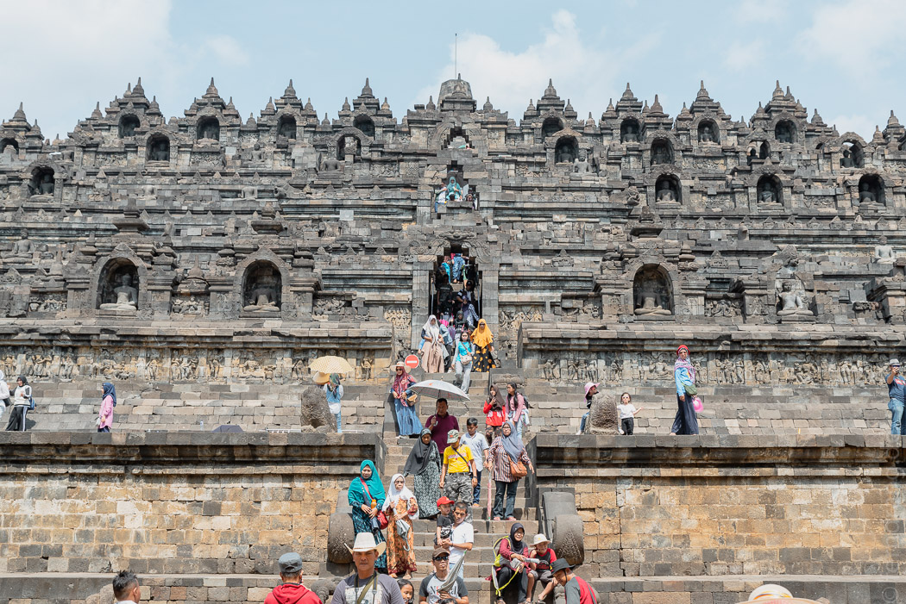
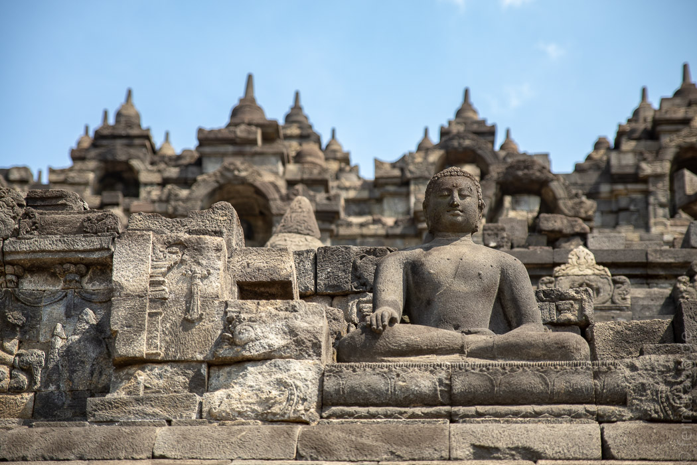
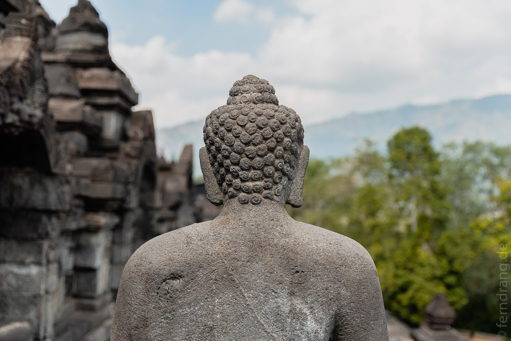
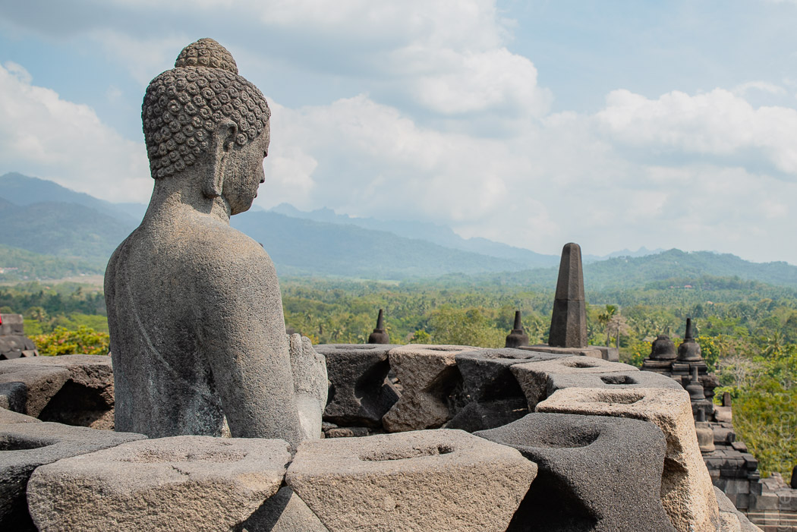
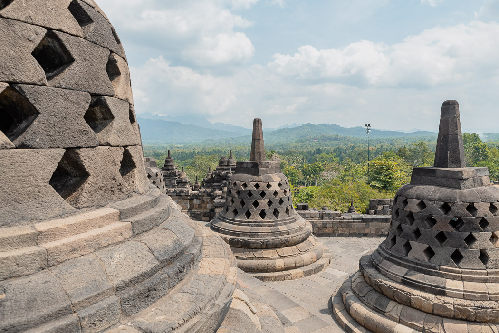
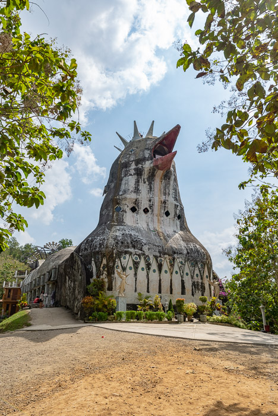
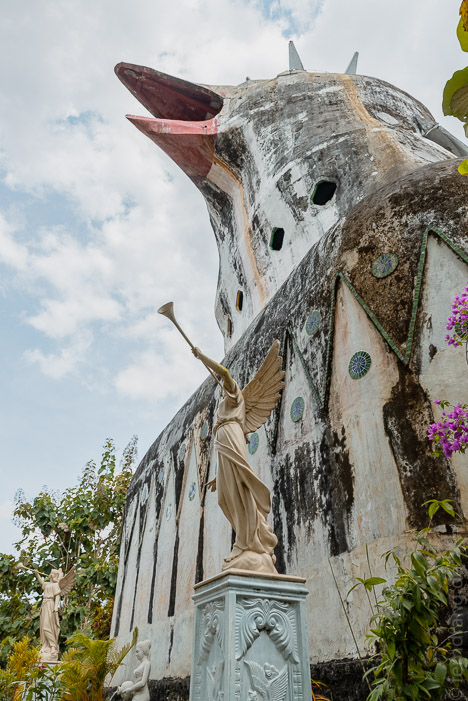

Westlich von Jogja liegt der Borobudur, die (nach den Tretkäfern natürlich) wichtigste Sehenswürdigkeit der Gegend. Nachdem wir die vollen Straßen der Stadt hinter uns gelassen hatten, wurde es schnell ländlich. Irgendwann tauchte ein ziemlich großer Parkplatz zwischen den Reisfeldern auf. Leider hat der Tempel keine Fernwirkung. So mussten wir erst in der groß angelegte Gelände, bevor wir den Klotz sehen konnten.
Der buddhistische Tempel ist aus dem 9. Jahrhundert und besteht aus übereinander liegenden, immer kleiner werdenden, rechteckigen Terrassen - eine Art Pyramide. Auf jeder Ebene gibt es einen Rundgang mit endlosen Wandreliefen, die schön restauriert wurden. In allen Himmelsrichtungen führen Treppen hinauf. Wann man alle Runden mitmacht, ist man mehrere Kilometer unterwegs. Trotz guter Vorsätze haben wir ab der dritten Etage geschummelt.
 Auf der obersten Ebene (Himmel), liegen noch mehrere runde Etagen, die in einer großen Stupa münden. Die ringsum verteilten glockenförmigen Stupas mit darin verborgenen Buddhas kennt wohl jeder von kitschigen Plakaten. Einige Buddhas haben eine Cabrio-Stupa abbekommen und können die Aussicht genießen. Allerdings bedarf es wohl einiger Retusche, um die vollkommen überlaufene Platform von Selfie-Sticks, Großfamilien und knipsenden Paaren zu befreien.
  Äußerst spirituell war auch unser nächster Stopp bei der etwas weniger berühmten Chicken Church in der Nähe. Hier hat ein Dorf zusammengelegt um eine Kirche in Form eines Huhns zu bauen. Das ragt jetzt auf einem Hügel aus dem Wald und guckt blöd ins Land. Uns wurde zwar erklärt, dass es eine Möwe oder eine Taube sei, aber das klang nach einem unzulässigen nachträglichen Veredelungsversuch dieses skurrilen Bauwerks. Unter den Schwanzfedern gibt es ein kleines Café, in dem sich die Gläubigen aller Religionen, für die dieses „überkonfessionelle Gebetshaus“ angeblich gebaut wurde, erfrischen könnten. Die Aussicht durch den Schnabel oder vom gekrönten Kopf ist genauso schön, wie die Engelsfiguren mit Trompeten, die den Bau flankieren.
 